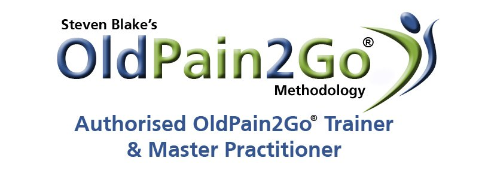

Heb je al lang pijn? Je hoeft niet te geloven dat het werkt, OldPain2Go® staat hier uitgelegd
Als je al geruimde tijd last hebt van pijn dan begrijp ik dat je sceptisch zult zijn. Steven Blake had zelf 40 jaar lang last gehad van zijn rugpijn en is nu pijnvrij sinds 2011. Hij weet dat het werkt en traint nu OldPain2Go® aan andere mensen over de hele wereld. In de Benelux zitten twee trainers die OldPain2Go® mogen trainen. Pijn heeft een doel indien het gerelateerd is aan een nieuw letsel of probleem. Het geeft ons een urgentie om het probleem aan te pakken wat relevant is voor hoe groot het probleem is. Nadat we de juiste medische diagnose hebben gehad en het weefsel is genezen, of niet verder kan genezen/ er verder niets meer aan gedaan kan worden dan zou het pijnsignaal moeten verdwijnen omdat het zijn doel heeft behaald.
Zelf genezing
Ons lichaam is een natuurwonder en geneest in de meeste gevallen zichzelf zonder bewuste inbreng. OldPain2Go® zorgt ervoor dat je bewuste en onderbewuste met elkaar in contact komen/ met elkaar communiceren. De practitioner fungeert als een mediator in dit proces. Dit is niet te vergelijken met andere methodes en het enige wat er gebeurt is dat de practitioner met je praat er is geen trance/ hypnose nodig. OldPain2go® is een simpele methode gebaseerd op hoe onze hersenen dingen verwerken. Hoewel we allemaal verschillende informatie in ons hoofd opslaan, hebben we de neiging om dingen op dezelfde manier te verwerken.
behoefte
Indien we de pijn blijven behouden lang na de eerste waarschuwing, moeten we ons afvragen of het pijnsignaal nog een functie heeft of een oud, nutteloos gedateerd pijnbericht is. Dit kan alleen gedaan worden op onbewust niveau waarin de OldPain2Go® practitioner je zal begeleiden.
Geloof
Ik zal je niet vragen om erin te geloven, want de meeste mensen geloven het nog steeds niet nadat ze pijnvrij zijn. Maar je moet wel echt pijnvrij WILLEN zijn, en geen redenen hebben om te pijn vast te houden (ziektegewin).
